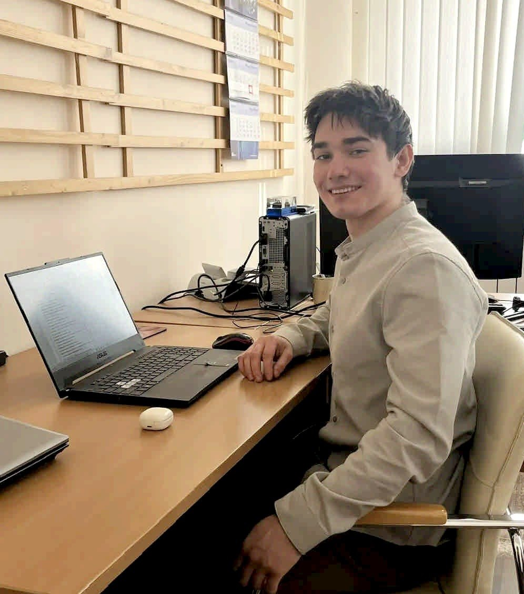
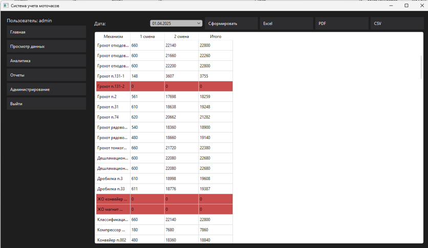
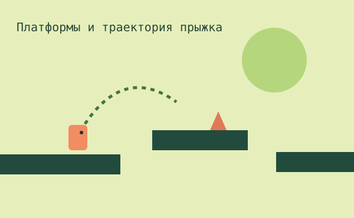
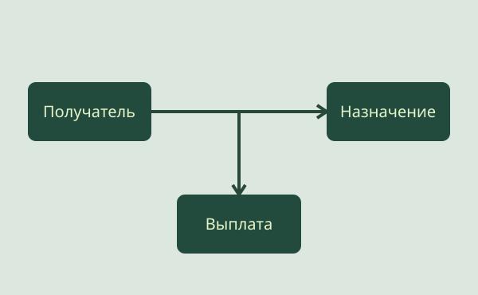

ПРОГРАММНАЯ ИНЖЕНЕРИЯ
Андрей
Нехорошев.
Разрабатываю приложения, проектирую базы данных и собираю игровые прототипы.
Смотреть проекты
Обо мне
Учусь в ГУАП на направлении «Программная инженерия». В учебных проектах мне нравится брать задачу целиком: определить, какие данные нужны, придумать структуру хранения, написать логику и проверить результат через интерфейс.
В приложении учёта моточасов я работал с накопительными показаниями и расчётом по двум сменам. В Unity мне было интересно настроить прыжок и генерацию дистанции так, чтобы игрок мог сразу начать новый забег после ошибки. В проектах с базами данных люблю проверять расчёты на граничных случаях.
Проекты

Учёт моточасов
Настольное приложение с отчётами по сменам и выгрузкой данных по механизмам.

Двухмерный раннер
Автоматический бег, прыжки, генерация платформ и моментальный перезапуск.

Учёт социальных выплат
Проект базы данных для хранения сведений о получателях и назначенных выплатах.